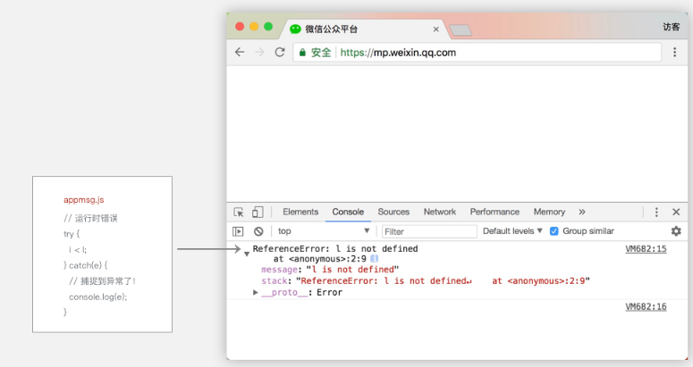

在WebView层有两种方法可以捕捉JS异常：
try, catch方案。你可以针对某个代码块使用try,catch包装，这个代码块运行时出错时能在catch块里边捕捉到。
window.onerror方案。也可以通过window.addEventListener("error", function(evt){})，这个方法能捕捉到语法错误跟运行时错误，同时还能知道出错的信息，以及出错的文件，行号，列号。
图8-2和8-3分别展示了两个方案的使用方法以及出错呈现。

图8-2 利用try-catch捕捉JS运行异常

图8-3 通过window.onerror捕捉JS运行异常
这两个方案都无法捕捉代码的语法错误，但是一般在开发阶段，工具就已经能够显示出脚本的语法错误，因此这类异常完全是可以在开发阶段消除，运行阶段并不会有此类异常发生。
对比window.onerror的方案，try-catch的方案有个缺点：
没法捕捉到全局的错误事件，也即是只有try,catch的块里边代码运行出错才会被捕捉到。
逻辑层不存在window对象，因此逻辑层AppService侧无法通过window.onerror来捕捉异常。
所以小程序基础库在WebView侧使用window.onerror方案进行捕捉异常，在逻辑层AppService侧通过把App实例和Page实例的各个生命周期等方法包裹在try-catch里进行捕捉异常。同时在App构造器里提供了onError的回调，当业务代码运行产生异常时，这个回调被触发，同时能够拿到异常的具体信息，开发者自己根据业务情况处理对应的容错逻辑。
我们在基础库里捕捉到的运行时异常会上报到我们的服务器，然后产生类似图8-4所示的监控曲线，通过这个监控图来观察基础库的运行情况。

图8-4 基础库异常监控曲线
最后一次编辑于 2019年08月19日 （未经腾讯允许，不得转载）